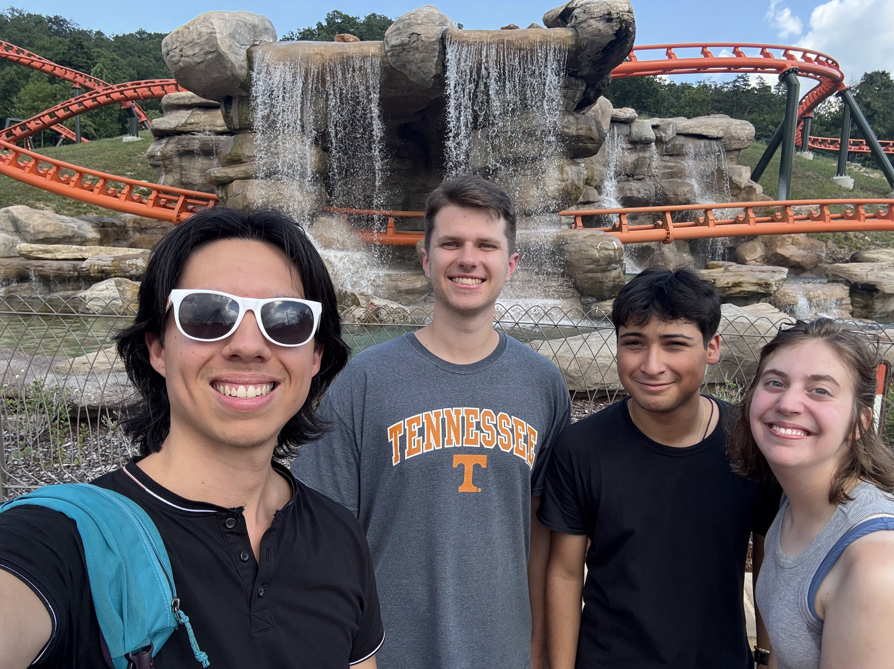
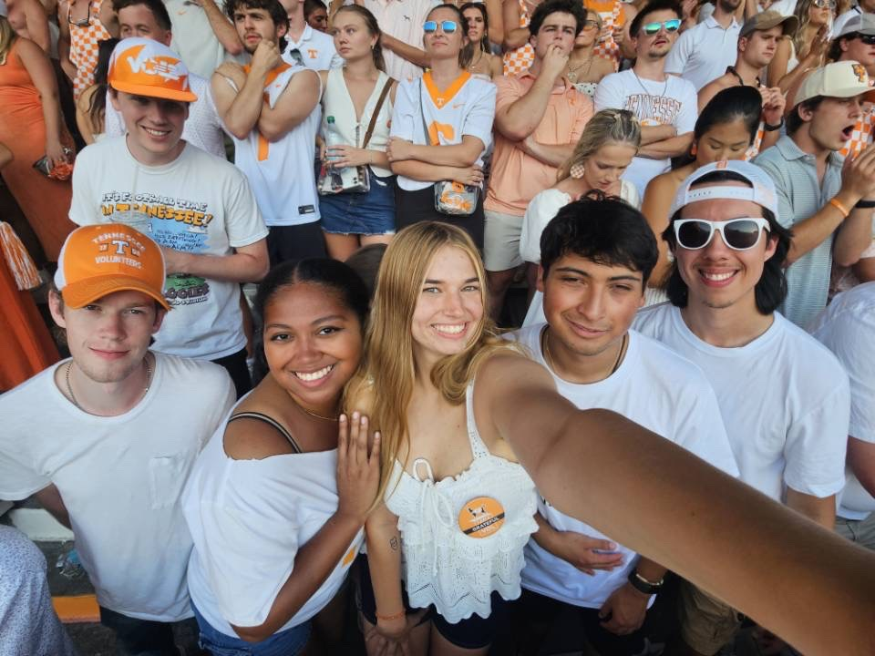
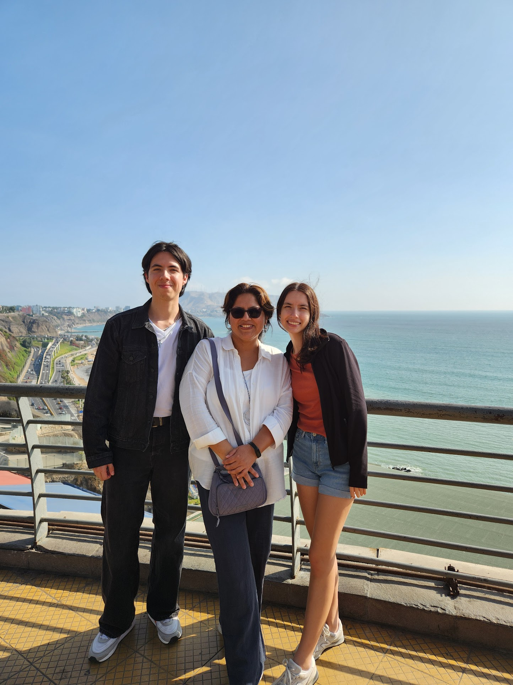
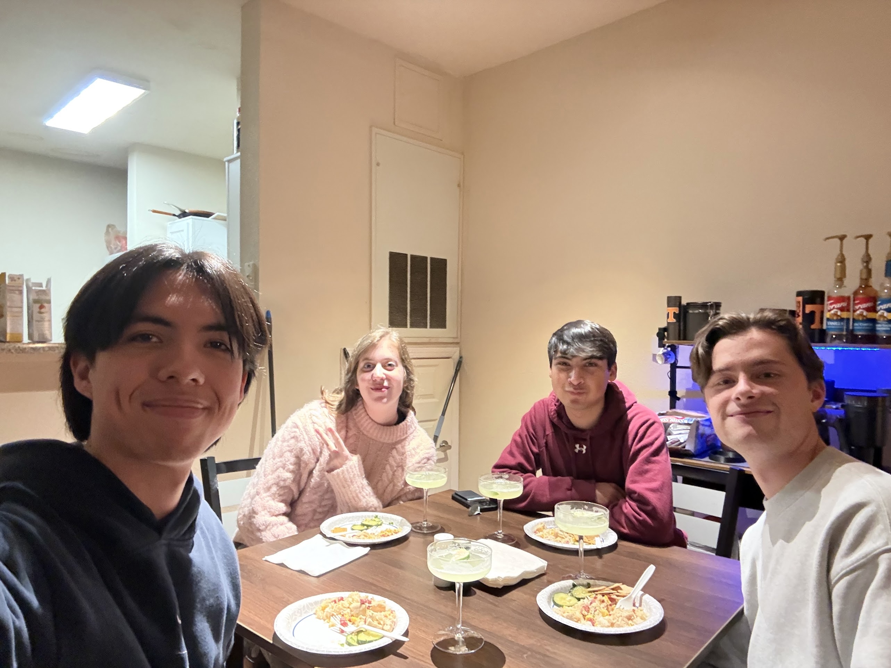
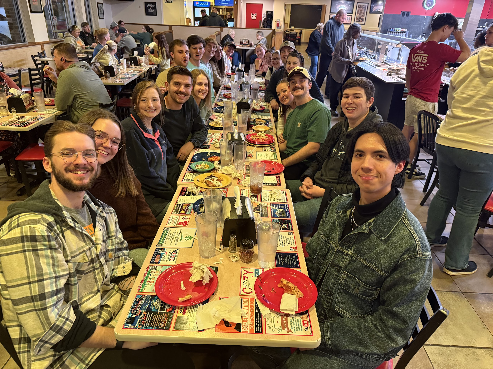
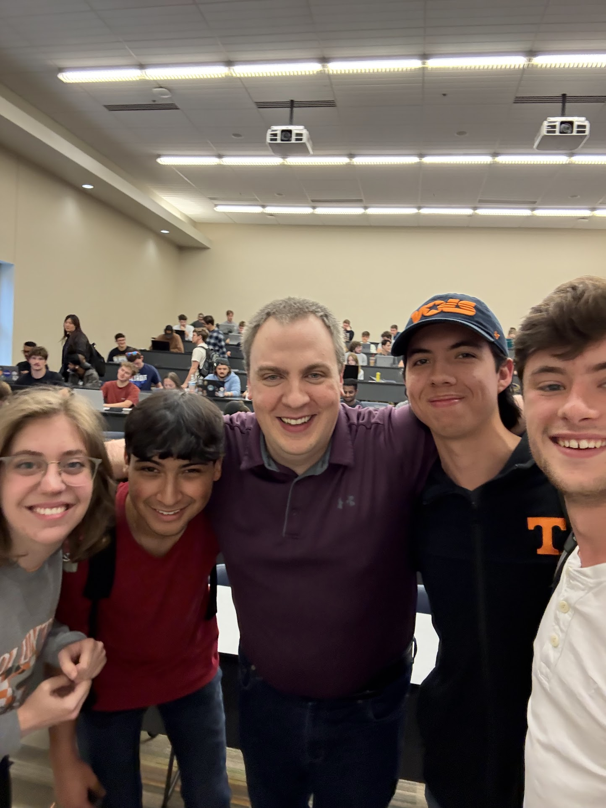

About Me
Hey there! I'm David, a 22-year old Peruvian-American studying computer science at the University of Tennessee, Knoxville. I'm currently wrapping up my bachelor's degree in CS, and I'm planning on attending graduate school at UTK for an additional year thanks to their 5-Year BS/MS program. During my time at school, I've built a strong foundation in artificial intelligence, machine learning, software development, and data structures/algorithms. I'm currently on track to graduate with Summa Cum Laude honors, several projects under my belt, and what is left of my sanity (don't worry, I'm still here somewhat).
~
I'm currently working as an Undergraduate Teaching Assistant for the Tickle College of Engineering's Engineering Fundamentals (EF) program, where I tutor first-year students in engineering physics and support professors both in and out of the classroom. I have previously worked as an Undergraduate Research Assistant for the Social Tactile & Assistive Robotics and Intelligence (STARI) lab, where I explored applications of social robots that use tactile sensors. Looking ahead, I will be working in Naperville, IL, during this summer as a Gas Strategic Technology Intern for Southern Company, blessed with the opportunity to gain hands-on experience with machine learning and practical AI in the energy/power domain. I will also continue to work for the EF program as a Graduate Teaching Assistant, where I will get to lead lab sessions and mentor the next batch of undergraduate students.
~
My interests reside in large language model (LLM) safety and improving our day-to-day interactions with popular commercial models. I've observed recently how others rely on a chatbot for mental health and/or therapeutic purposes. Commercial chatbots are currently not equipped to handle the complexity of human emotions, which has led to tragic consequences over the last couple years. I would love to work improving safeguards on models to ensure they're safe for use before being deployed for production. I would also love to work on developing agentic tools equipped for these complex tasks to potentially lead to agents augmenting the work of therapists in the mental health domain.
~
During my free time, I love to watch movies at the theater, produce music, stay active by going to the gym or running, serving at my church, and hanging out with family and friends.
life outside work





